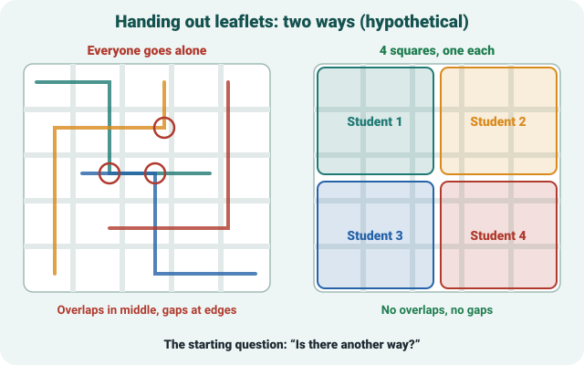

K4 · Creativity and improvement › Level 1 Exploring
Ask "is there another way?" and share one idea with your group
A Level 1 (Beginner) lesson. The next lesson, at Level 2: Try a small new way of working.
1. Objectives
- Think of at least 3 ways to do a task before choosing one.
- Share one idea with your group in 2 sentences: what it is, and how it helps.
2. Retrieval warm-up
- When plans change, which 2 questions do you ask?
- When something does not work, why should you change only one thing before trying again?
Answers
- "What should I do first now?" and "What about the task I'm in the middle of?"
- So you know whether that one change helped.
Review: When plans change.
3. Explanation
Creativity at work is usually very small. You do not need to invent anything. You only need to spot a way that is faster, tidier or less likely to go wrong.
The easiest habit to start with is one question: "Is there another way?"
Why think of several ways before choosing? Your first idea is usually the most familiar one, not always the best. When you make yourself find 3 ways, you often see a better option.
Three prompts for finding another way
- RemoveWhich step can you drop and still get the result?
- Combine or reorderWhich two tasks can be done together? Which order saves walking back and forth?
- BorrowHow do other people, or other places, do this?
Share an idea with your group in 2 sentences. Sentence 1: what the idea is. Sentence 2: how it helps. For example: "Let's split the slides by presenter, not by chapter. Then each person edits their own part without waiting."
Being brief helps the group hear all of it and respond easily. If the group chooses another way, that is fine. You still gave the group one more option.
Two things to avoid:
- Putting down someone else's idea to lift your own. Say "another option is…".
- Changing how the whole group works before anyone agrees.
At Level 1, the goal is to share ideas. Testing them and measuring the result comes at Level 2.
4. Workplace example
Hypothetical scenario. A group of 4 students has a part-time job handing out leaflets for a bookshop. Each of them goes their own way, and many streets get leaflets twice.
Nina asks the group: "Is there another way?" The group comes up with 3 ways:
- Split the area map into 4 squares, one person per square.
- Meet at the crossroads, and post in the group chat which streets are done.
- Hand out at 2 busy fixed spots, and swap people every hour.
Nina shares her idea: "Let's split the map into 4 squares, one each. Then no street gets leaflets twice, and we can see which areas are missing."

Why this works: the group had 3 options before choosing. The idea was shared in 2 sentences, with a clear benefit.
5. Practice
Hypothetical scenario. Your class is running a drinks stall at the school fair. Last year, customers queued for a long time because one person took the money and made the drinks.
Think of 3 other ways, then write 2 sentences sharing one idea.
Hint 1
Use the three prompts: remove, combine or reorder, borrow from a real shop.
Hint 2
How does a bubble tea shop usually split the work between the cashier and the person making drinks?
Model answer
Three ways: separate the person taking money from the people making drinks; make some drinks before the busy time; sell only 3 drinks so they are quick to make.
Idea: "Let's have one person take money and write the order slips, and two people only make drinks. Then customers don't wait for one person to do everything."
6. Self-check
Choose an answer. Every option has an explanation.
Question 1. Why think of at least 3 ways before choosing?
-
Not quite. The first idea is not always wrong. But it is usually the most familiar, not always the best.
-
Correct. Correct. With more options, it is easier to choose a better way.
-
Not quite. The aim is more options, not more time.
Question 2. Which way of sharing an idea fits best?
-
Not quite. Putting down others' ideas makes the group less willing to listen and work together.
-
Correct. Correct. Two sentences: what the idea is and how it helps, with no put-downs.
-
Not quite. Changing how the group works before anyone agrees causes confusion.
Question 3. "Which step can you drop and still get the result?" Which prompt is this?
-
Correct. Correct. This question looks for unnecessary steps.
-
Not quite. Borrowing means looking at how other people or places do it.
-
Not quite. Combining means doing two tasks together, not dropping a step.
Question 4. The group chooses another way, not your idea. How should you see it?
-
Not quite. Your idea still gave the group another option to compare.
-
Correct. Correct. Sharing an idea is a contribution, even if the group chooses differently.
-
Not quite. Silence means the group loses ideas that might be better.
7. Reflection
- In something you do every day, which step could be removed or combined?
- What makes you hesitate to share an idea in front of a group?
8. Real-world application
Over the next 7 days, choose one group task or one task at work. Think of 3 ways to do it, then share one idea in 2 sentences. Note how the group responded.
9. Metadata
| skill | K4 · Creativity and improvement |
|---|---|
| level | Level 1 · Exploring |
| group | N2 |
| framework_map | WEF: Creative thinking; CSfW: 3d Create and innovate; SkillsFuture CCS: Creative Thinking; EntreComp: Spotting opportunities; Creativity (reference only) |
| original | Vietnamese version |
| updated | 2026-11-14 |
Finish the lesson
Mark it as done and the site suggests reviews after 1, 3 and 7 days. The data stays on your device only.
Suggested reviews: